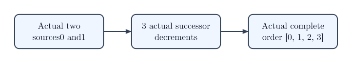
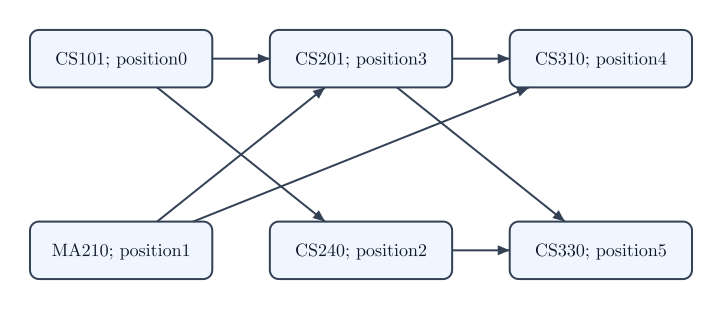
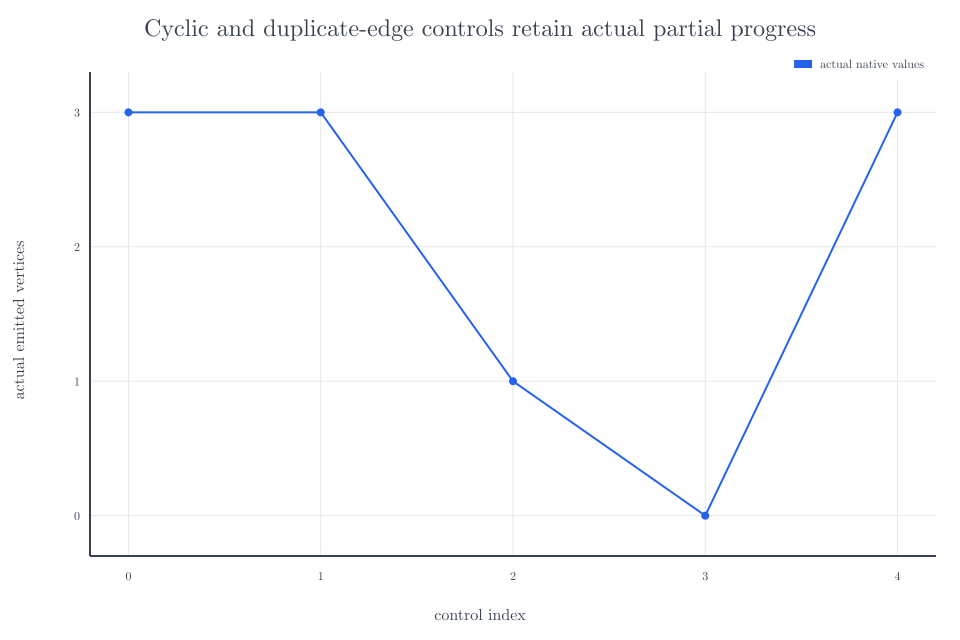
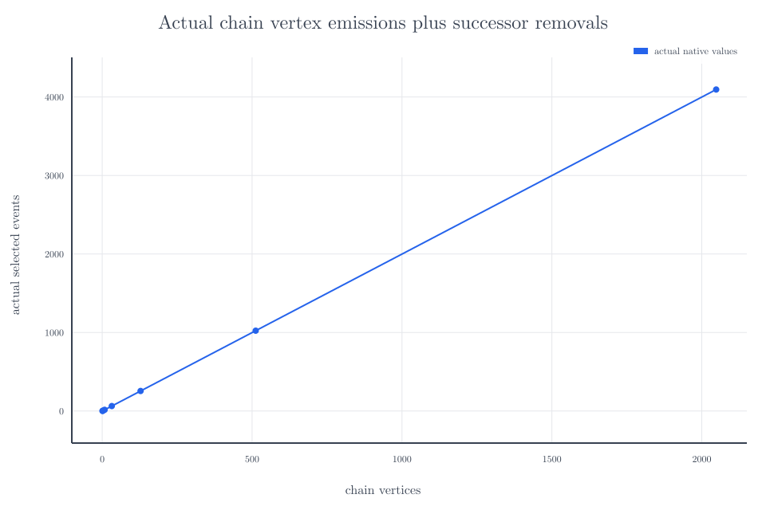

Kahn topological sort: actual FIFO sources and blocked cycles
Abstract
Kahn emits ready sources and removes their outgoing prerequisites. Actual FIFO decisions, indegree changes and partial progress retain the original six-course curriculum while diagnosing cyclic leftovers accurately.
Mechanism and mathematical scope
Seed sources in increasing vertex ID order, then process a FIFO queue. Each emitted source decrements every outgoing edge, enqueuing a successor exactly when its remaining indegree reaches0. A DAG emits all vertices; fewer emissions prove a directed cycle exists. Remaining blocked vertices may also be descendants of cycles, so they are not all cycle members. Fixed edge-list order is deterministic but does not imply a globally lexicographically minimal order. Duplicate edges are counted and removed separately. O(V+E) producing work and owned graph/queue storage.
A tiny actual producing history
The table and native concept diagram read the same producing execution. Every block below is a complete editable C++ program.
#include <dm/dm.hpp>
int main() {
namespace a = dm::algorithms;
namespace g = dm::graphics;
std::filesystem::create_directories("build");
auto r = a::topological_sort_trace(4, {{0, 2}, {1, 2}, {2, 3}});
std::print("| actual action | node | other | indegree before | after | ready queue size | emitted |\n| " "--- | ---: | ---: | ---: | ---: | ---: | ---: |\n");
for (const auto &s : r.steps)
std::print("| {} | {} | {} | {} | {} | {} | {} |\n", s.action, s.vertex,
s.other, s.degree_before, s.degree_after, s.ready, s.emitted);
g::Diagram concept_diagram(48, 1100);
concept_diagram.node("n0", {0, 0}, "Actual two sources0 and1");
concept_diagram.node("n1", {5, 0},
std::format("{} actual successor decrements",
r.edge_visits));
concept_diagram.node("n2", {10, 0},
std::format("Actual complete order {}", r.result.order));
concept_diagram.edge("n0", "n1").edge("n1", "n2");
concept_diagram.save_svg("build/topological_sort_tiny.svg");
}| actual action | node | other | indegree before | after | ready queue size | emitted |
|---|---|---|---|---|---|---|
| source | 0 | 4 | 0 | 0 | 1 | 0 |
| source | 1 | 4 | 0 | 0 | 2 | 0 |
| emit | 0 | 4 | 0 | 0 | 1 | 1 |
| edge | 0 | 2 | 2 | 1 | 1 | 1 |
| emit | 1 | 4 | 0 | 0 | 0 | 2 |
| edge | 1 | 2 | 1 | 0 | 1 | 2 |
| emit | 2 | 4 | 0 | 0 | 0 | 3 |
| edge | 2 | 3 | 1 | 0 | 1 | 3 |
| emit | 3 | 4 | 0 | 0 | 0 | 4 |

The retained original experiment
#include <dm/dm.hpp>
int main() {
namespace a = dm::algorithms;
namespace g = dm::graphics;
std::filesystem::create_directories("build");
const std::vector<std::string> names{"CS101", "MA210", "CS201", "CS240",
"CS310", "CS330"};
const std::vector<std::pair<std::size_t, std::size_t>> edges{{0, 2}, {0, 3},
{1, 2}, {1, 4},
{2, 4}, {2, 5},
{3, 5}};
auto r = a::topological_sort_run(6, edges);
std::print("Original curriculum actual order `{}`; DAG {}; witness valid {}.\n\n| actual position | " "original course | actual level |\n| ---: | --- | ---: |\n",
r.result.order, r.result.is_dag,
a::is_topological_order(6, edges, r.result.order));
for (auto i : r.result.order)
std::print("| {} | {} | {} |\n", r.positions[i], names[i], r.levels[i]);
g::Diagram diagram(48, 1200);
const std::array<double, 6> lanes{2, -2, 2, -2, 2, -2};
for (std::size_t i = 0; i < 6; ++i)
diagram.node(std::to_string(i), {double(r.levels[i]) * 5, lanes[i]},
std::format("{}; position{}", names[i], r.positions[i]));
for (auto[u, v] : edges)
diagram.edge(std::to_string(u), std::to_string(v));
diagram.save_svg("build/topological_sort_original.svg");
}Original curriculum actual order [0, 1, 3, 2, 4, 5]; DAG true; witness valid true.
| actual position | original course | actual level |
|---|---|---|
| 0 | CS101 | 0 |
| 1 | MA210 | 0 |
| 2 | CS240 | 1 |
| 3 | CS201 | 1 |
| 4 | CS310 | 2 |
| 5 | CS330 | 2 |

Explicit controls
#include <dm/dm.hpp>
int main() {
namespace a = dm::algorithms;
namespace g = dm::graphics;
std::filesystem::create_directories("build");
std::vector<double> x, y;
std::vector<std::vector<std::pair<std::size_t, std::size_t>> > cases{
{}, {{0, 1}, {1, 2}}, {{0, 1}, {1, 0}}, {{0, 1}, {1, 0}, {1, 2}},
{{0, 1}, {0, 1}, {1, 2}}
};
std::print("| control | actual DAG status | compatibility order | actual partial emissions | remaining " "indegrees |\n| ---: | --- | --- | --- | --- |\n");
for (std::size_t i = 0; i < cases.size(); ++i) {
auto r = a::topological_sort_run(3, cases[i]);
x.push_back(i);
y.push_back(r.emitted.size());
std::print("| {} | {} | `{}` | `{}` | `{}` |\n", i, r.result.is_dag,
r.result.order, r.emitted, r.remaining_indegree);
}
auto plot = g::RPlot::create();
plot.lines(x, y, "actual native values", {37, 99, 235}).points(
x, y, {37, 99, 235}, 4).title("Cyclic and duplicate-edge controls retain actual partial progress").x_label("control index").y_label("actual emitted vertices");
plot.save_svg("build/topological_sort_controls.svg");
}| control | actual DAG status | compatibility order | actual partial emissions | remaining indegrees |
|---|---|---|---|---|
| 0 | true | [0, 1, 2] | [0, 1, 2] | [0, 0, 0] |
| 1 | true | [0, 1, 2] | [0, 1, 2] | [0, 0, 0] |
| 2 | false | [] | [2] | [1, 1, 0] |
| 3 | false | [] | [] | [1, 1, 1] |
| 4 | true | [0, 1, 2] | [0, 1, 2] | [0, 0, 0] |

Actual selected work and sensitivity
#include <dm/dm.hpp>
int main() {
namespace a = dm::algorithms;
namespace g = dm::graphics;
std::filesystem::create_directories("build");
std::vector<double> x, y;
std::print("| chain vertices | actual emitted vertices | actual edge decrements | actual enqueues |\n| " "---: | ---: | ---: | ---: |\n");
for (std::size_t n : {1, 2, 8, 32, 128, 512, 2048}) {
std::vector<std::pair<std::size_t, std::size_t>> edges;
for (std::size_t i = 1; i < n; ++i)
edges.emplace_back(i - 1, i);
auto r = a::topological_sort_run(n, edges);
x.push_back(n);
y.push_back(r.emitted.size() + r.edge_visits);
std::print("| {} | {} | {} | {} |\n", n, r.emitted.size(),
r.edge_visits, r.enqueues);
}
auto plot = g::RPlot::create();
plot.lines(x, y, "actual native values", {37, 99, 235}).points(
x, y, {37, 99, 235}, 4).title("Actual chain vertex emissions plus successor removals").x_label("chain vertices").y_label("actual selected events");
plot.save_svg("build/topological_sort_work.svg");
}| chain vertices | actual emitted vertices | actual edge decrements | actual enqueues |
|---|---|---|---|
| 1 | 1 | 0 | 1 |
| 2 | 2 | 1 | 2 |
| 8 | 8 | 7 | 8 |
| 32 | 32 | 31 | 32 |
| 128 | 128 | 127 | 128 |
| 512 | 512 | 511 | 512 |
| 2048 | 2048 | 2047 | 2048 |

API and interpretation
The compatibility result clears its order on cycles; run output separately retains actual emitted vertices, remaining indegrees and n-sentinel positions for unprocessed vertices. Level values are exact longest-path levels only for DAGs; on blocked vertices they are the lower bounds actually propagated from emitted sources. The independent order checker validates a complete permutation and every edge without rerunning Kahn.
Reusable producers, fixtures and histories live in the canonical C++ library. Captured records own their values and do not come from a separate report replay. Selected counters and record/scalar policies are specified at their API boundaries; they are not peak-byte or wall-time budgets. Synthetic structural inputs are controlled fixtures for these mechanisms.
References
Verified in the shared ten-document batch: 70 scoped native cases;20 directly
instrumented ASan/UBSan cases;75 executable public examples;387/387 definitions
across25 full scopes;10 hovers;9766 independent records/134784 checks;frozen
valid-input comparisons across all ten families;13 checkout/installed standalone
headers and linked ten-family consumer;40 executed programs and40 inspected
figures with both exports. Receipts: build/mepml-conversion/batch-394-403/.